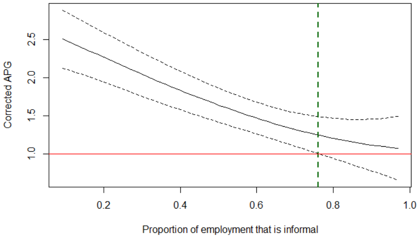
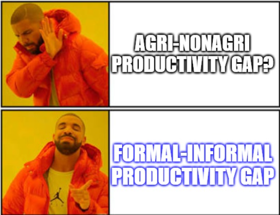
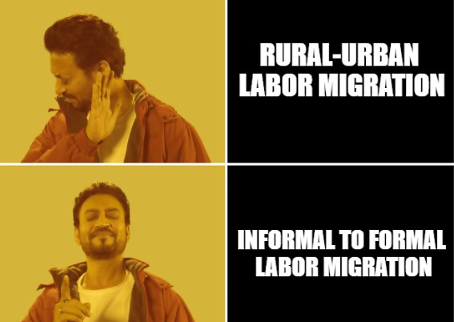

RESEARCH
Forecasting Paper
Kernel Three Pass Regression Filter
(with Daanish Padha)
[Award winner at The World Congress of the Econometrics Society, Seoul, 2025]
[Accepted for Presentation in European Winter Meeting of the Econometric Society (EWMES) 2024]
A long-horizon forecasting method that beats competing methods on 75% of 176 macro series (FRED-QD dataset).
Award-winning paper, The 2025 World Congress of the Econometric Society.
Abstract
We forecast a single time series using a high-dimensional set of predictors.
When predictors share common underlying dynamics, a latent factor model estimated
by the Principal Component method effectively characterizes their comovements.
These latent factors succinctly summarize the data and aid in prediction, mitigating
the curse of dimensionality. However, two significant drawbacks arise: (1) not all
factors may be relevant, and utilizing all of them in constructing forecasts leads to
inefficiency, and (2) typical models assume a linear dependence of the target on the
set of predictors, which limits accuracy. We address these issues through a novel method:
Kernel Three-Pass Regression Filter. This method extends a supervised forecasting technique,
the Three-Pass Regression Filter, to exclude irrelevant information and operate within an
enhanced framework capable of handling nonlinear dependencies. Our method is computationally
efficient and demonstrates strong empirical performance, particularly over longer forecast horizons.
Causal Inference Paper (Deep Learning)
Sufficient Instruments Filter
[Accepted for Presentation in The 2025 California Econometrics Conference and European Meeting of the Econometric Society]
[Invited talks at: Southern Illinois University Carbondale, Gettysburg College, University of Guelph, ISI Delhi, IIT Delhi]
A five-layer deep learning architecture for causal inference with high-dimensional, correlated, weak, or invalid instruments. In a CAPM application on a small-cap ETF, uncovers a true beta of 1.51 versus a naive OLS estimate of 1.05, a 44% higher systematic risk exposure, rejecting the null of beta ≤ 1 at 99% confidence.
Proves consistency and asymptotic normality under correlated, high-dimensional instruments.
Abstract
This paper introduces a novel five-layered deep learning-based tractable procedure to filter out sufficient information
from many instruments for estimating parameters in regression models with endogenous regressors.
The method draws its merit from three key properties: the ability to incorporate supervision,
the flexibility to accommodate non-linearity, and the capability for sufficient dimension reduction.
This method is consistent and asymptotically normal when many instruments are correlated.
Simulation exercises show that this method consistently achieves lower bias and root mean squared error
compared to competing benchmarks, across many specifications. Two
real-world applications in industrial organizations(IO) and finance are considered, yielding meaningful insights into causal relationships.
The method remains robust when the number of instruments exceeds the sample size, and performs well with weak and even invalid
observed instruments, as long as there exists at least one linear combination of common factors among the
observed instruments that serves as a valid instrument.
Application in Macro-Financial Markets
Macro Factors Are Underrated: Bond Risk Premia Revisited
Overturns the consensus that macro factors play a secondary role to the Cochrane-Piazzesi (CP) factor in explaining bond risk premia, surpassing this influential 2005 benchmark.
[Draft Available on Request]
Abstract
This paper revisits the role of macroeconomic factors in explaining bond risk premia.
We show that carefully constructed supervised macroeconomic
factors explain a substantial and economically meaningful share of
variation in bond risk premia—far more than previously documented.
In contrast, widely used principal component–based macro factors,
such as those of Ludvigson and Ng (2009), substantially understate
the true explanatory power of macroeconomic information. As a result,
the influential conclusion of Cochrane and Piazzesi (2005)
that financial factors dominate macroeconomic forces is overturned:
once the variation explained by our supervised macro factors is removed,
neither financial factors nor PCA-based macro factors explain any remaining
variation in bond risk premia, whereas the reverse is not true.
These findings imply that standard financial and unsupervised macro factors
capture only a subset of the information embedded in macroeconomic fundamentals when they are properly measured.
Application of Non-Parametric Modeling
The Agricultural Productivity Gap: Informality Matters
(with Bharat Ramaswami )
[Accepted at the top field journal in development economics: Journal of Development Economics, Vol 178 (2026)]
[Media Coverage by Ideas for India and VoxDev, leading international policy research portals]
1 / 3

Productivity Gap --- Informality
2 / 3

Informed View of Productivity Gap
3 / 3

Policy Implication
❮
❯
Applied non-parametric econometric modeling to overturn conventional wisdom on a long-standing question in development economics.
Abstract
The measured agricultural productivity gap (APG) in developing countries typically compares agriculture with the entire non-farm economy,
implicitly treating the latter as homogeneous. In developing countries, most non-farm employment is informal, concentrated in small,
unregistered enterprises with low productivity. This paper compares the productivity of agriculture to the informal and formal non-farm
sectors in India. Using Indian sectoral data from the India KLEMS database linked with nationally representative labor surveys,
we decompose the non-farm economy into formal and informal segments and adjust productivity measures for differences in hours worked,
human capital, and labor's share of value-added. We find that the APG is almost entirely driven by the small formal non-farm sector.
The gap with the informal sector is negligible. Between 63 and 75 % of non-farm workers are in informal employment dominated industries
that are not more productive than agriculture. These results reframe the APG as a formal–informal divide.
Selected Presentations
| The 13th World Congress of the Econometric Society | Seoul, South Korea (Aug 2025) |
| The European Winter Meeting of the Econometric Society (EWMES 2024) | Palma, Spain (Dec 2024) |
| The 35th Annual Midwest Econometrics Group Conference | UIUC, IL, USA (Oct 2025) |
| The California Econometrics Conference | Victoria, BC, Canada (Sep 2025) & UC Davis (Sep 2024) |
Full presentation history available on request.